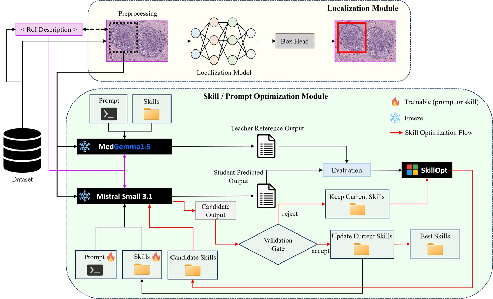

實習專案
醫學病理影像病灶定位與結構化分析系統
實習期間自主提案，以RefPath公開資料集訓練及實驗評估。在推論模式，輸入影像進行病灶區域定位，並根據預測的定位進行模型推論來產生最終結構化分析報告

- YOLO 定位
- 人工選取 ROI
- VLM 報告
Mistral Small 3.1 · RefPath 衍生測試集
調整前
10.83%
調整後
99.29%
專案重點
-
挑戰
傳統方法是由醫師逐張閱片並標註影像中病灶區域並整理報告，此舉不僅需要大量時間，同時也容易出錯
-
任務
實習期間自主提案，獨立開發研製異常區域定位與結構化分析輔助系統
-
方法
基於Teacher-Student框架下，採用雲端MedGemma 1.5 醫療特化模型作為教師參考，固定地端Mistral Small 3.1學生模型權重，並透過 SkillOpt 分別最佳化學生的Prompt 與 Skills。
以 Gradio 建置系統操作介面，在國網中心 NANO4高速運算伺服器達成整合，並以Client-Server架構進行部署
-
成果
YOLO11m 的 Recall 為 81.7%，mAP50 為 86.6%。Mistral Small 3.1 的 Prompt 實驗中，JSON Schema 違規由 12,006 件降至 95 件。